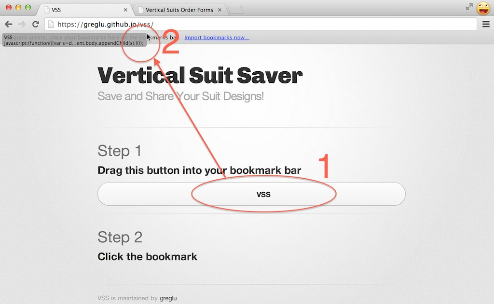
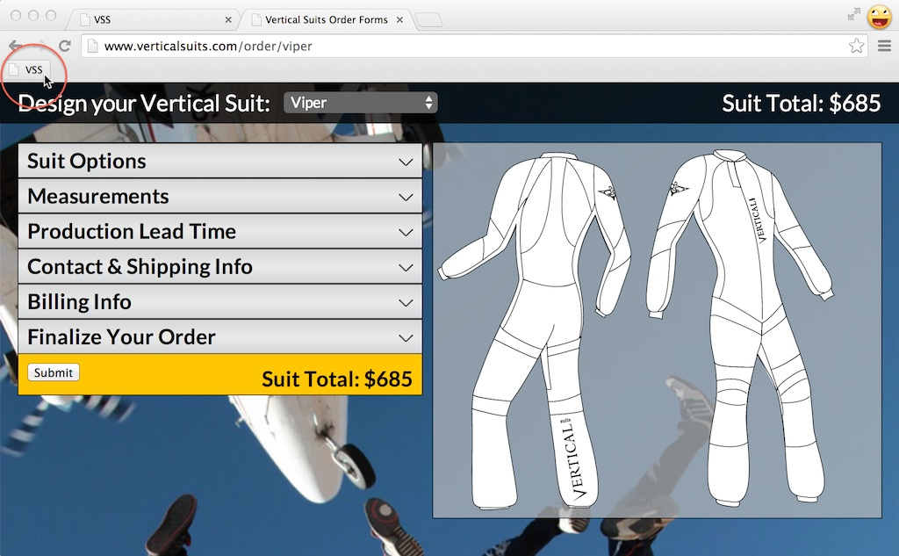
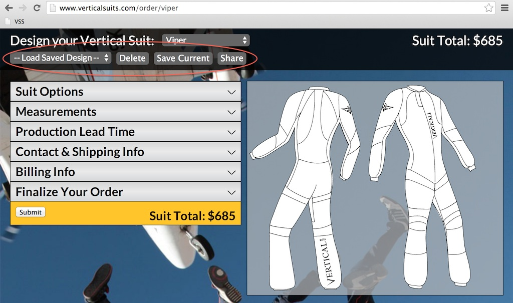

Step 1
Drag this button into your bookmark bar
VSS
Step 2
Visit Vertical's order page and click on the bookmark
Note: this needs to be done each time you reload the order page. See the questions section below for more information.

Step 3
Profit!

Questions
- What is this?
- Since Vertical's suit designer application didn't have a built-in way to save/share designs, VSS was created to fill the need.
- How does it work?
- VSS is a bookmarklet; a technique for enhancing browsers or websites with extra functionality.
- Why do I have to click on the bookmark each time I visit the suit designer?
- Since VSS isn't built into Vertical's suit designer, it requires a user action to start up. I'll be talking to Vertical to see if they're interested in integrating the tool directly. Until then, you'll need to click the bookmark each time.
- Where is the data stored?
- VSS stores all data directly inside your own browser using localStorage. If you clear your browser's history/cache, you might delete all of your saved designs!
- Are you going to steal my info?
- Nope. I'm a pretty nice guy. But if you don't trust me, you can read the source code yourself.
- How does the link sharing work?
- At any point while designing your suit, you can click on the "Share" button and VSS will present you a link. You can then send this link to any of your friends or save it for yourself. To load the shared design, you'll need to click on the bookmark again. Point your friends to this webpage to show them how to use it.